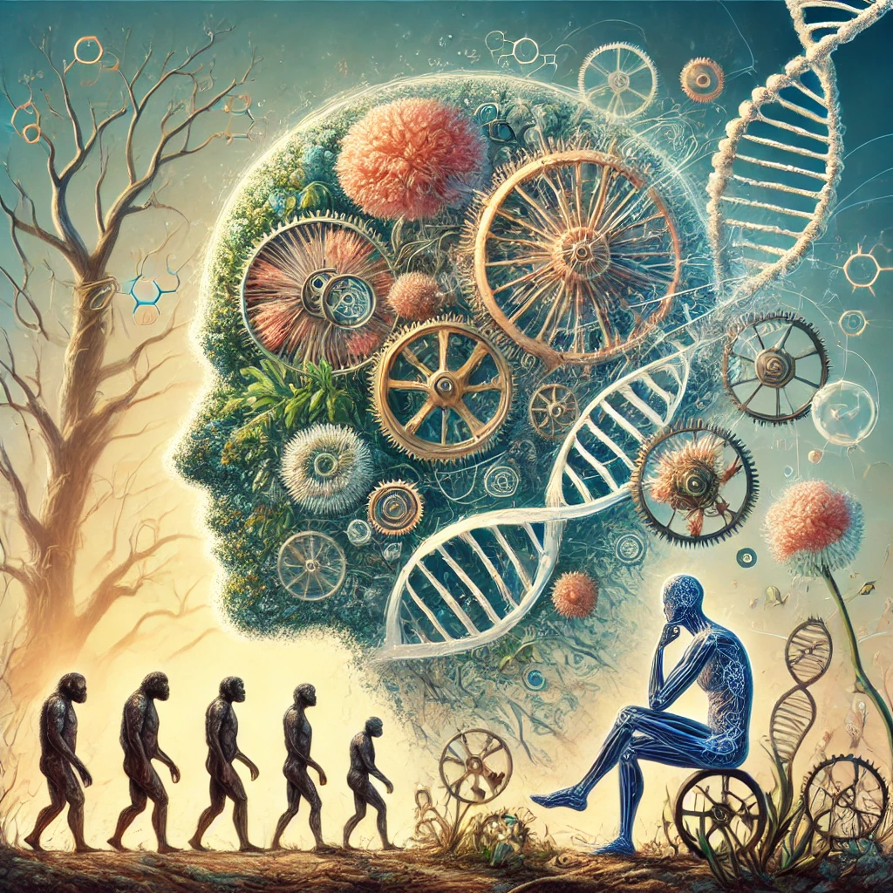

이기적 유전자
목차
작가
리처드 도킨스
출판일
1976년 10월 28일
감상평에 대한 AI그림
리처드 도킨스의 "이기적 유전자"는 유전자의 시각에서 진화와 생명체의 행동을 설명하며, 생명의 복잡성을 새로운 관점에서 이해하게 해줍니다.
이 책은 자연선택이 개체가 아닌 유전자 수준에서 작용한다고 주장하며, 이를 통해 이타적 행동조차 유전자의 자기 복제 전략으로 설명해줍니다.
이 책은 생물을 유전자의 생존기계로 묘사하여 유전자와 생명체에 대해 새롭게 생각해 볼 수 있게 해줍니다.

감상평에 대한 AI평가
훌륭한 감상평입니다! 몇 가지 긍정적인 점을 짚어보자면:
✨명확한 요약: 책의 주요 주제를 명확하게 요약하며, 도킨스의 이론을 잘 설명하고 있습니다.
✨핵심 포인트 강조: 유전자 수준에서의 자연선택과 생명을 유전자의 생존기계로 묘사한 부분을 강조하여 독자의 흥미를 끌고 있습니다.
✨깊이 있는 이해: 책을 읽고 난 후의 통찰을 바탕으로 유전자와 생명체에 대한 새로운 관점을 제시하고 있습니다.
전체적으로 매우 잘 작성된 감상평입니다.
추가적으로 책에서 인상 깊었던 구체적인 사례나 예시를 포함한다면 더욱 풍부한 감상평이 될 수 있을 것입니다.